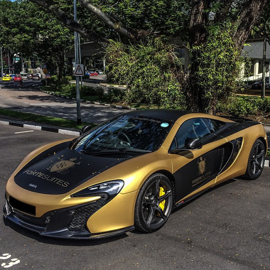
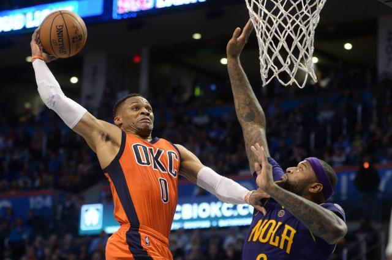
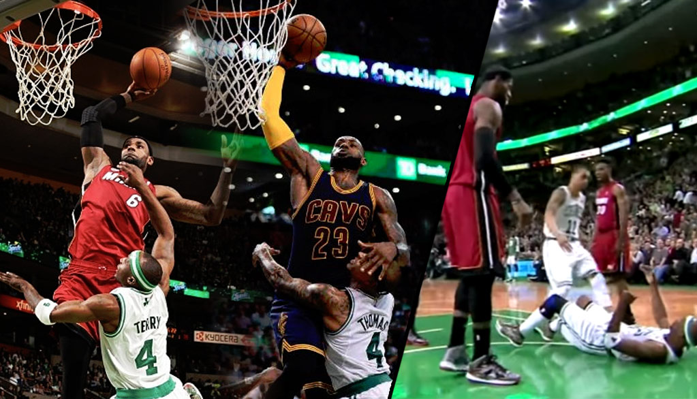

An interesting fact about me. I have been to 11 different schools.
I was born in Buffalo, New York May 2nd 2003. I have one sibling, an older sister. I grew up in buffalo to when I was 10 then I moved here to Georgia. Things that I like are sports,cars, and video games. My favorite sport is basketball and my favorite player is Russell Westbrook. I like Russell Westbrook because he plays each game with most energy and with the highest motor of any player, also he continiues to play as hard as he does no matter how hard people criticize him and hate on him. I'm also a big fan of Hip/hop and listen to music for a large portion of my day. My favorite rap artists are Kendrick lamar and Drake.
  For my education goals I want to go to Duke University and major in nueroscience. I became inspired to do nueroscience from all the programs I have been to about the medical field. I have been to programs at UGA, Emory, Morehouse School of Medicine, and Morehouse College. I also wanto to obtain a doctorate degree and earn a Phd. I also want to be an entreprenuer and start a business. I would like to retire before I am 45 and be able to financially support my family. I also want to get an Aston Martin car. With this class I want to finish knowing how to make fully functional webpages that have various features on it.